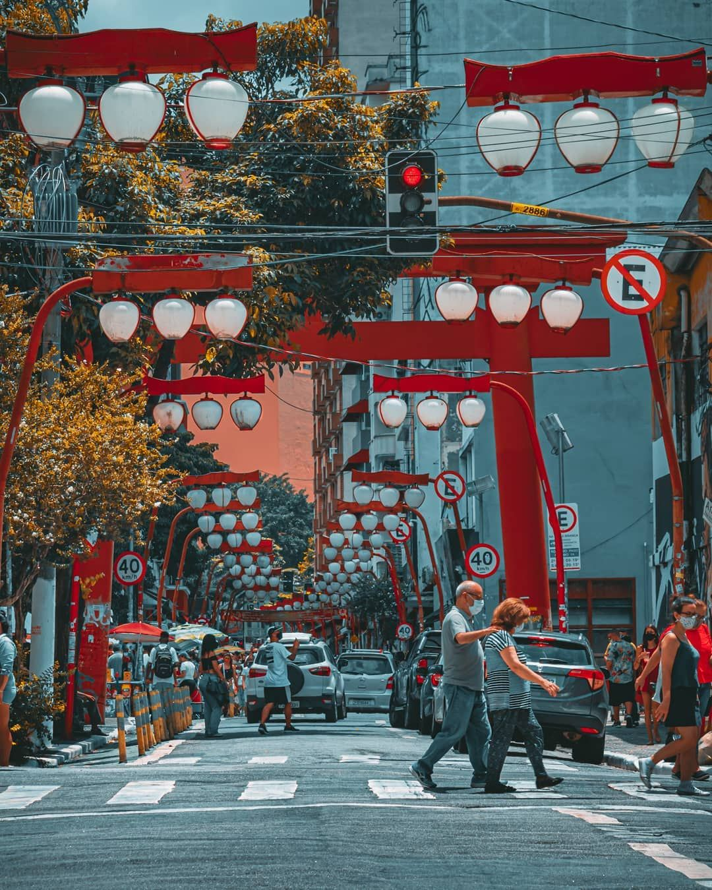
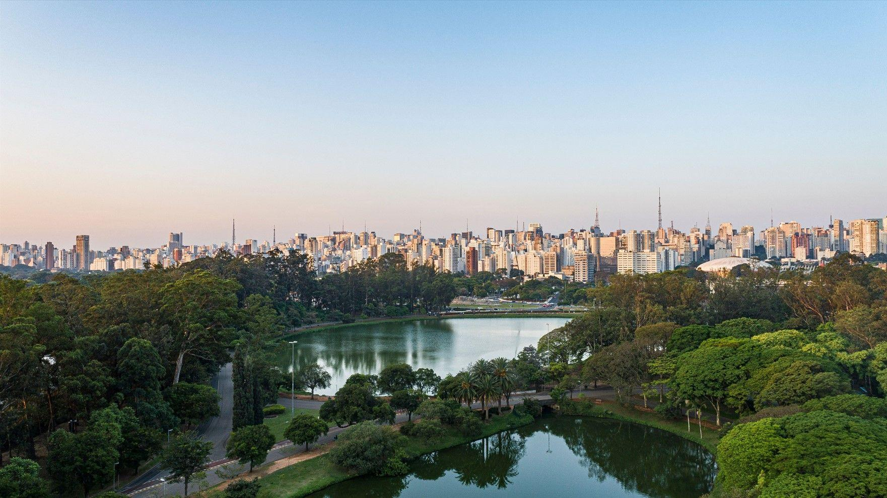
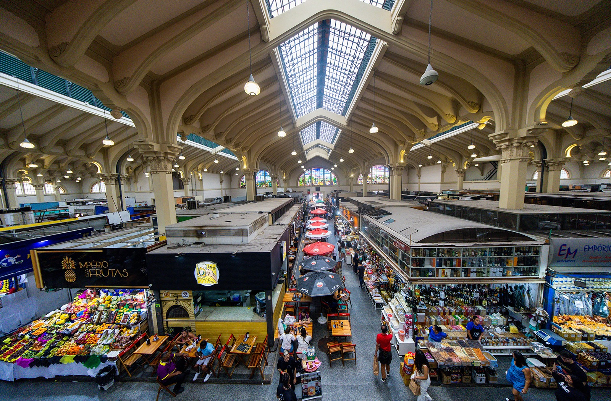

EXPLORE
PLACES TO VISIT

MASP
（サンパウロ美術館）
サンパウロの中心部、パウリスタ大通りにある有名な美術館です。 1947年に設立され、現在は絵画、彫刻、写真など、 11,000点以上の作品を所蔵しています。 赤い柱で支えられた特徴的な建物も有名で、 サンパウロを代表する観光スポットの一つです。

Liberdade
（リベルダージ）
サンパウロにある東洋文化で有名な地区です。 日本からの移民の歴史が深く、日本料理店やスーパー、 日本の商品を販売する店などが多くあります。 現在では中国や韓国などの文化も見ることができ、 多くの観光客が訪れる人気スポットです。

Parque Ibirapuera
（イビラプエラ公園）
サンパウロを代表する大きな都市公園です。 広い緑地や湖があり、散歩、ランニング、 サイクリングなどを楽しむことができます。 公園内には博物館や文化施設もあり、 市民や観光客の憩いの場所として親しまれています。

Mercado Municipal
（サンパウロ市営市場）
サンパウロ中心部にある有名な市場で、 「メルカダオン」という名前でも親しまれています。 新鮮な果物、肉、魚、チーズなど多くの食品が販売されています。 ブラジルの食文化を体験できる場所として、 観光客にも人気があります。